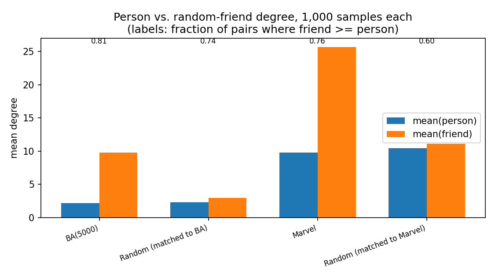
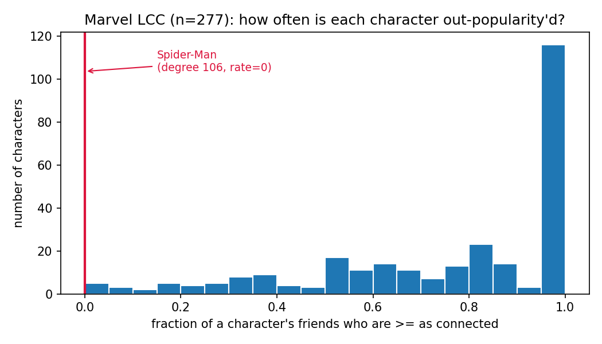

Social Graphs & Network Science · Week 2 · Null Models
YOUR FRIENDS ARE MORE POPULAR THAN YOU
The friendship paradox, stress-tested on the Marvel character network with Barabási–Albert graphs, random controls, and 500 degree-preserving shuffles.
Ask any character how popular their friends are.
Ask any of the 277 connected characters in Wikipedia's Marvel superhero network how many friends their friends have, on average, and the answer is almost always "more than I have." That's not a personality flaw, it's arithmetic — and it's a clean illustration of a null-model idea from this week's toolkit: a statistic that looks like a fact about this specific network turns out to be entirely explained by its degree sequence.
Method, in three sentences: we built the network from Wikipedia's Category:Marvel Comics superheroes (303 characters, 1,784 directed hyperlink edges), collapsed it to an undirected simple graph, and restricted to the largest connected component (277 characters, 1,421 edges), since "who's your friend's friend" only makes sense within one connected piece. We then compared the network against Barabási–Albert and Erdős–Rényi controls, and null-modeled it with 500 degree-preserving shuffles. Full code: week2_gonuts.ipynb.
Two averages, biased by construction
Two averages get compared, and they are not the same quantity: ⟨k⟩, the mean degree of a character picked uniformly at random ("how many friends does a random person have"), and ⟨knn⟩, the mean degree of a random friend — reached by picking a random character, then following a uniformly random one of their links ("how many friends does a random person's random friend have").
Following a link does not sample nodes uniformly — it samples a node with probability proportional to its own degree. High-degree nodes are systematically over-represented among "friends." One line of algebra makes the gap exact:
The excess over ⟨k⟩ is exactly σ²/⟨k⟩ — the degree variance, rescaled. It is zero only when every node has the same degree, small when degrees cluster near the mean (Erdős–Rényi), and large whenever a few hubs stretch the tail (scale-free networks). The paradox isn't really about "hubs" as a special ingredient; it's about degree variance, full stop — hubs are just an efficient way to get a lot of it.
Does it hold in the Marvel network? Yes, and it's not close.
Sampling 1,000 (person, random-friend) pairs directly — person uniform, friend uniform among
that person's links — on four networks: a 5,000-node Barabási–Albert network (m=1, from
exercise 2.5b), an Erdős–Rényi G(n,m) control matched to it, Marvel itself, and a
second G(n,m) control matched to Marvel's own size.


The random control is the honest baseline here, and it's telling: even with zero preferential structure, a same-size Poisson-degree network still shows the friend ahead of the person 60% of the time — the paradox never fully disappears, it just gets much smaller. Real Marvel and BA sit well above that floor.
Who's actually driving it
For every character, we computed the fraction of their friends who are at least as connected as they are — call it their "out-popularity'd rate."

- Spider-Man (degree 106) is the only character never out-popularity'd — every one of his 106 neighbors has strictly lower degree than he does. He's more than 40 links ahead of the #2 hub, Hulk (65).
- 116 characters (42%) are out-popularity'd by every single friend they have.
- The median character has roughly 5 out of 6 friends at least as popular as they are.
Spider-Man is the whole story in miniature: a single dominant hub is enough to make almost the entire rest of the network "friends with someone more popular than them," without needing any of the other 276 characters to be unusual in any way.
Is this about Marvel, or just its degree sequence?
Does the paradox's strength depend on which characters link to which (team
affiliations, storyline clusters, editorial prominence), or purely on how many links each
character has? We generated 500 degree-preserving randomizations of the
Marvel network (nx.double_edge_swap, 10×edges swap attempts per realization,
max_tries=100×edges, seed 2026) — each shuffle keeps every character's degree
exactly fixed while scrambling who they're actually linked to — and reran the same
1,000-pair sampling on each.

Real Marvel lands squarely inside both null distributions. This is the expected, slightly boring result, and that's the finding: the edge-weighted formula ⟨k_nn⟩ = ⟨k⟩ + σ²/⟨k⟩ depends only on the degree sequence by construction, so it cannot move under a degree-preserving shuffle — and here, neither does the empirically sampled version. Whatever narrative structure actually connects these characters contributes nothing measurable beyond what their degree already implies.
To sanity-check the other end of the variance axis, we also ran an 8-regular random graph on 277 nodes (σ² = 0 by construction): mean person and mean friend degree came out identical, 8.00 = 8.00, confirming variance — not "hubs" as a category — is the necessary and sufficient ingredient.
What a typical AI explanation gets wrong
A representative explanation an LLM tends to produce when asked "why do my friends have more friends than me," graded against the formula from Part 1 and the numbers above.
"This is called the friendship paradox. It happens because popular people — hubs with lots of connections — show up in many other people's friend lists, so when you look at your friends, you're more likely to have sampled one of these popular people. Basically, your friends have more friends than you because well-connected people are friends with everyone. This is why the effect is strongest in networks with hubs, like scale-free networks, and why it disappears in a random network where there's no popular people to bias the sample."
- Correct: popular nodes get over-sampled as "friends" — the right mechanism (size-biased sampling).
- Overclaim: "your friends have more friends than you" is a statement about population means, not a guarantee for every individual — Spider-Man's own friends are all less connected than he is.
- Missing the mechanism: never mentions variance. "Hubs" describes one way to get large σ², not the mechanism itself.
- Flatly wrong: the paradox does not disappear in random networks — our random control still shows the friend ahead 60% of the time. It only truly vanishes at σ² = 0, as the 8-regular graph above demonstrates.
Best wrong sentence: "the effect disappears in a random network where there's no popular people to bias the sample" — random networks still have mildly-more-popular-than-average nodes, and that alone is enough to keep the paradox alive, just weaker.
What we can't conclude
- This is a Wikipedia hyperlink graph, not a social network — an edge means "the article for A links to the article for B," tracking narrative/editorial prominence more than friendship.
- We discarded edge direction (reciprocity is only 0.39 — many links are one-way).
- We dropped 17 isolated characters and 9 small side-components to get a single connected piece to sample from.
- The null-model result is a non-finding: it says this test with 500 shuffles couldn't detect extra structure beyond the degree sequence, not that no such structure exists anywhere.
Give any network this much variance in connections, real or shuffled, and everyone's friends end up more popular than they are — Spider-Man doesn't need to be specifically Spider-Man for the paradox to hold, he just needs to be the one hub.